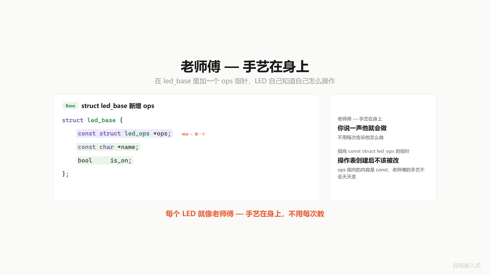
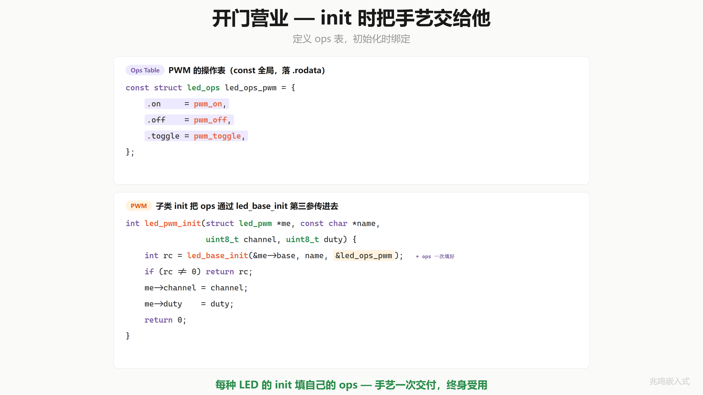
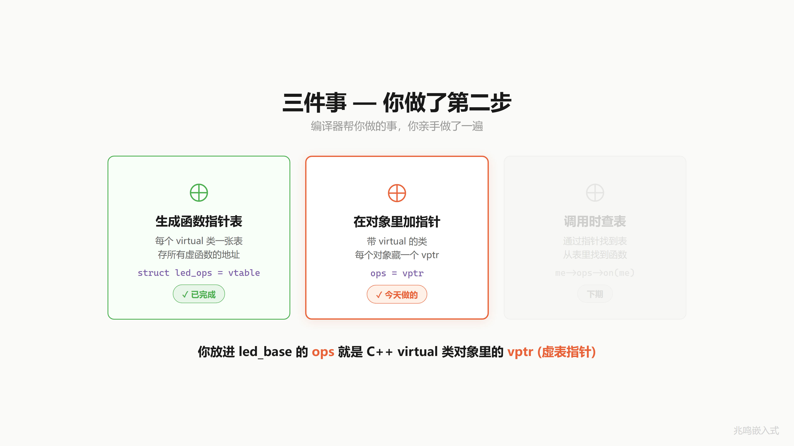

第 10 章 · ops 放进对象
10.1 一个真实场景
第 9 章 ops 表已经做完了。struct led_ops 把 3 个函数指针打包，led_ops_gpio / led_ops_pwm 各填一张 const 表。test_led 接 ops 指针。
但应用层还有个问题。每次调用都得自己传 ops：
test_led(&red_led.base, &led_ops_gpio);
test_led(&blue_led.base, &led_ops_pwm);
test_led(&green_led.base, &led_ops_i2c);
应用层得记住“红灯用 gpio 表、蓝灯用 pwm 表、绿灯用 i2c 表“。一旦记错或传错，又是 bug：
test_led(&red_led.base, &led_ops_pwm); /* 红灯走了 PWM 表, 全乱 */
更别说哪天加第四种 LED，每个调用点都要改。
应用层根本不应该关心“这颗 LED 用哪张表“。这个对应关系应该 LED 自己记住。
10.2 朴素方案：维护一个全局映射
直觉 1：搞一张全局表 name → ops_table：
const struct led_ops *get_ops_for(const char *name)
{
if (strcmp(name, "red") == 0) return &led_ops_gpio;
if (strcmp(name, "blue") == 0) return &led_ops_pwm;
if (strcmp(name, "green") == 0) return &led_ops_i2c;
return NULL;
}
test_led 内部：
test_led(struct led_base *me)
{
const struct led_ops *ops = get_ops_for(me->name);
ops->on(me);
...
}
能跑。但每加一种 LED 改一处全局函数，回到了“加一种 LED 改驱动代码“的老路。这就是 ch07 朴素 if-else 方案的变形。
直觉 2：每颗 LED 自己带着自己的 ops 表。struct led_base 加一个 ops 字段，init 时填进去，调用时从字段取。
struct led_base {
const struct led_ops *ops; /* 自己带着 */
const char *name;
bool is_on;
};
加新 LED 不用改任何全局代码。每颗 LED 自治。
10.3 把 ops 字段放进 led_base 第一个位置
ops 字段放在 struct led_base 而不是放进每个子类（struct led_gpio / struct led_pwm），这是关键决策：
放在子类里，每一种子类都得自己加一个 ops 字段，而且基类层函数（接 struct led_base *）拿不到这个字段，dispatch 没法在基类层统一写。
放在 struct led_base 里，所有继承了 base 的子类全都自动有 ops 字段。一处定义，全员共享，基类层函数（led_on(struct led_base *me)）就能直接 me->ops->on(me) dispatch。
ch10 这一步就是继承（ch06）和操作表（ch09）合体的时刻：
struct led_base {
const struct led_ops *ops; /* 新增, 第一个字段 */
const char *name;
bool is_on;
};
ops 现在放在 led_base 的第一个字段。name 和 is_on 退到后面。
为什么 ops 放第一个？因为 C++ 编译器把 vptr 也放在对象起始处。Linux 内核 / Zephyr / GObject 也都把“指向函数表的指针“放在 base 第一个。这是世界标准。
第 12 章会讲为什么 vptr 在前面对向上转型很关键（“基类地址 = 子类地址”，向上转型零开销）。本章先记住这个约定。

10.4 init 时填 ops
每种子类的 init 函数把 ops 表地址传给 led_base_init：
int led_base_init(struct led_base *me, const char *name,
const struct led_ops *ops)
{
if (!me || !name || !ops)
return -1;
me->ops = ops;
me->name = name;
me->is_on = false;
return 0;
}
int led_gpio_init(struct led_gpio *me, const char *name, uint8_t pin)
{
int rc = led_base_init(&me->base, name, &led_ops_gpio);
if (rc != 0)
return rc;
me->pin = pin;
platform_gpio_init(pin, GPIO_MODE_OUTPUT);
platform_gpio_write(pin, false);
return 0;
}
int led_pwm_init(struct led_pwm *me, const char *name,
uint8_t channel, uint8_t duty)
{
int rc = led_base_init(&me->base, name, &led_ops_pwm);
if (rc != 0)
return rc;
me->channel = channel;
me->duty = duty;
return 0;
}
每个子类的 init 都把“我用哪张 ops 表“作为常量传给基类 init。基类 init 把它存到 me->ops 字段。一次填好，对象一辈子不用改 ops。
这一步等价于 C++ 里 class led_gpio : public led_base { virtual on(); } 的对象构造时，编译器自动把 vptr 设成 led_gpio::vtable。

10.5 调用方接口：传 base 指针
应用层调用怎么写？
struct led_gpio red_led;
led_gpio_init(&red_led, "red", 13);
led_on(&red_led.base); /* 不用传 ops 了 */
led_off(&red_led.base);
led_toggle(&red_led.base);
应用层传给 led_on 的是 struct led_base *，不是 struct led_gpio *。这是关键。
led_on 函数体长这样：
int led_on(struct led_base *me)
{
if (!me)
return -1;
assert(me->ops && me->ops->on &&
"led_on: subclass must implement on()");
me->is_on = true;
return me->ops->on(me);
}
三件事：
- 拿到 base 指针
me - 通过
me->ops找到 ops 表 - 通过
me->ops->on找到具体的 on 函数，调它
me->ops->on(me) 这一行就是面向对象多态的核心机制。第 11 章会展开讲它两次跳转的内存图景。
on / off / toggle 是 LED 的核心能力，子类必须实现。调试构建里 assert 抓到忘实现的子类，立即 abort + 给行号；Release 构建定义 NDEBUG 后 assert 整行消失，零运行时开销。第 14 章会专门展开必填和选填的边界。
10.6 子类指针怎么变成基类指针
led_on(&red_led.base) 这一行有个微妙的细节。red_led 类型是 struct led_gpio，red_led.base 是它内嵌的 struct led_base 字段，&red_led.base 取这个字段的地址，类型 struct led_base *。完全合法。
那能不能直接 led_on(&red_led)？类型是 struct led_gpio *，led_on 期望的是 struct led_base *。编译器报类型不匹配。
但因为 struct led_base base 是 struct led_gpio 的第一个字段（base 永远第一），&red_led 和 &red_led.base 在内存里是同一个地址。两个不同的指针类型，指向同一字节。
所以可以强转：
led_on((struct led_base *)&red_led);
合法。会跑对。但编译器现在没法帮你查类型了。Linux 内核风格更喜欢 &red_led.base（显式说“我要的是 base 部分“），强转留给 ch13 讲 container_of 反方向找回外层时用。
第 12 章会专门讲这件事。它叫向上转型（upcasting），是整个面向对象多态的入口。
10.7 这个东西叫什么
每个对象自带一个指针，指向一张属于自己类型的函数表。调用时通过这个指针查表执行。
C++ 里这叫 vptr（virtual table pointer，虚表指针）。每一个有 virtual 函数的对象，C++ 编译器自动加一个 vptr，放在对象的最前面。
你刚才在 C 里手动做的事，就是 C++ 编译器看到 class led_base { virtual on(); }; 时偷偷做的事：
- 编译器为
class led_gpio生成一张虚函数表 vtable（在 .rodata），里面放led_gpio::on的地址（你的led_ops_gpio表） - 编译器在每个
led_gpio对象的最前面加一个 vptr，构造时填好（你的me->ops = &led_ops_gpio） - 调用
obj.on()时编译器把它编译成obj.vptr->on(this)（你的me->ops->on(me)）
机器码层面 C 和 C++ 几乎一字不差。Bjarne Stroustrup 那句 “no overhead beyond what a programmer would write by hand if they implemented the same feature manually” 是这条路径的具体体现。
C++ 还做了一件 C 没做的事：自动判断对象有没有 virtual 函数。没有的话不加 vptr，节省内存。C 里你写不写 ops 字段是手动决定的。

10.8 视频里没讲透的几个细节
10.8.1 ops 字段放第一个的硬要求
C11 标准 6.7.2.1 节第 15 段保证：结构体第一个成员的偏移量是 0。所以：
struct led_base *base = &red_led.base; /* base 字段在 led 里 offset 0 */
const struct led_ops **ops_addr = (const struct led_ops **)base;
/* *ops_addr 现在就是 me->ops */
ops 在 base 第一个，base 在 led 第一个。(struct led *)me 强转直接拿到子类指针，*((const struct led_ops **)me) 直接拿到 ops 表。两层零开销。
这件事在 C++ 里看不见，但在 C 里你能直接观察到。下一章会讲一个由此带来的玩法：所有面向对象语言的多态调用约定，第一条 instruction 几乎都是 LDR r0, [r0]（取对象起始处的 vptr）。
10.8.1.1 把 ops 放第一个的三条理由
不只是“传统“。ops 在第一个有三条具体的工程理由：
- 向上转型零开销：
&red_led和&red_led.base是同一个地址。基类层函数接struct led_base *me，应用层传&red_led.base进去，编译期不生成任何加法指令。如果 ops 不在 base 第一个，但 base 在子类第一个，向上转型还是零开销；只是基类层函数访问 ops 时要算偏移 - 取 vptr 是单条 LDR：
me->ops编译成LDR r3, [r0]（不带偏移）。一条指令，一个周期 + 一次访存。这是面向对象多态调用的最优情况。如果 ops 在偏移 8 处，编译器要生成LDR r3, [r0, #8]（指令长度一样、周期一样，但 micro-architecture 上偏移立即数走 immediate slot 占 5 bit，超过 124 的偏移要拆指令） - cacheline 友好：ARM Cortex-A 上 cacheline 通常 64 字节。对象起始处必然落 cacheline 头部。把最常访问的字段（多态调用必经的 ops）放头部，cacheline 命中率最高
C++ 编译器实现 vptr 时也都遵守“vptr 在对象最前面“。GCC、Clang、MSVC 三个主流编译器对单继承类一致，多继承时 vptr 位置略复杂但单继承场景一律最前。
10.8.1.2 me->ops->on(me) 的两次 LDR：在 ARM Cortex-M4 上长什么样
return me->ops->on(me);
ARM Cortex-M4 编译（-O2）大致是：
; 入口: r0 = me, 一个 struct led_base *
LDR r3, [r0, #0] ; r3 = me->ops (offset 0)
LDR r3, [r3, #0] ; r3 = me->ops->on (ops->on 是表第一个字段)
BX r3 ; tail-call 跳到 on, r0 还是 me 即第一个参数
三条指令 + 一次跳转。两次 LDR 都是 base + 偏移 0，编译期常量，不需要额外计算偏移。
如果 ops 不在 base 第一个：
; 假设 ops 在 base 偏移 8
LDR r3, [r0, #8] ; r3 = me->ops, 多了一个非零偏移
LDR r3, [r3, #0] ; r3 = me->ops->on
BX r3
指令条数和周期数其实一样（ARM 的 LDR 立即数偏移在指令编码里是 5-bit，正常字段都装得下），但 micro-architecture 上 0 偏移有一个微优化：地址生成单元跳过加法。这是 ns 级的差距，正常代码看不出来，是 Linus / Bjarne 都坚持“vptr 第一个“的次要原因之一。主因还是 1 和 3。
10.8.2 ops 是 const 还是 const 指针
const struct led_ops *ops;
const 在 struct led_ops 后面，修饰 struct led_ops（左边的），所以含义是“指向常量 led_ops 的指针“。指针 ops 本身是变量，可以改 me->ops = ...；但 me->ops->on = ... 不行（指向的内容是 const）。
如果把 const 写后面：
struct led_ops * const ops;
含义反了：const 修饰 ops（指针本身是 const），不能改 me->ops = ...，但能改 me->ops->on = ...。
工业代码用第一种：表本身常量（不能改实现），但字段可以重新赋值（运行时换 ops 表的极端场景）。Linux 内核 file_operations 全是这种风格。
10.8.3 sizeof(led_base) 的变化
ch09 之前：
struct led_base {
const char *name; /* 4 byte */
bool is_on; /* 1 byte */
/* 3 bytes padding */
};
sizeof = 8 (32-bit)
ch10：
struct led_base {
const struct led_ops *ops; /* 4 byte on 32-bit */
const char *name; /* 4 byte */
bool is_on; /* 1 byte */
/* 3 bytes padding */
};
sizeof = 12 (32-bit)
100 颗 LED 多 400 字节 RAM，换来“应用层不用传 ops 表“+“加新 LED 不改老代码”。这个交换在工业代码里几乎都做。RAM 紧张到非省不可的项目（M0 16KB RAM 跑了几百个对象），可能会用其它机制。
10.8.4 多态调用的指令开销
return me->ops->on(me);
ARM Cortex-M4 编译大致是：
LDR r3, [r0, #0] ; r3 = me->ops (3 cycle)
LDR r3, [r3, #0] ; r3 = me->ops->on (3 cycle)
BX r3 ; tail call, 跳到 on (3 cycle)
两次 LDR + 一次跳转。约 56ns @ 168MHz。比直接调用一个全局函数（一条 BL）多两个 LDR 的开销。
你看到的就是 C++ 虚函数 vcall 的精确成本。Stroustrup 把这两个 LDR 称为“虚函数的两次跳转“，是他承认的“非零开销“之一。在 99% 的嵌入式驱动场景里这点开销远低于 GPIO/I2C 操作本身的延迟，可以完全忽略。
但中断响应时间敏感的场景（比如 PWM 的高频更新）就要小心：vcall 会让 CPU 没法 inline，影响 branch prediction。这种地方用直接函数调用，不上 ops 表。
10.8.5 ops 表为什么不放到子类里
如果把 ops 字段放进 struct led_gpio，每种子类都得自己加 ops 字段。struct led_gpio 加一遍，struct led_pwm 加一遍。这违反了 6.3 节“提公因式“的初衷。
放到 base 里有个更深的好处：基类层就能 dispatch 多态调用。led_on(struct led_base *me) 这个函数只看 base 字段（ops），它根本不用知道你是 GPIO 还是 PWM 还是 I2C。所有“通过 ops 表查表 dispatch“的代码都在基类层写一次，子类一行不加。
这是 Linux 内核 struct file 的设计：file->f_op->read(file) 一行代码 dispatch 所有文件系统的 read 实现，不管你是 ext4、NFS 还是 procfs。第 16 章展开。
10.8.6 实现层 (struct led_base *me) 取回子类字段
实现层的函数签名变成：
static int gpio_on(struct led_base *me)
{
struct led_gpio *self = (struct led_gpio *)me; /* 强转回子类 */
platform_gpio_write(self->pin, true);
return 0;
}
注意第一个参数是 struct led_base *，但实现层要访问子类的字段（pin）。怎么办？
强转 (struct led_gpio *)me。因为 base 在 led_gpio 的第一个位置，地址是同一个，强转回去合法。
这是反方向（基类指针 → 子类指针）的转型，叫向下转型（downcasting）。比向上转型危险。如果你强转的指针不是 base 在第一个的子类，就会读到错位的字段。
第 13 章会讲 container_of 宏，让基类的 base 字段不必非得在第一个位置，依然能找回子类。这是 Linux 内核的标准做法。本章先用最朴素的强转，给读者建立直觉。
10.9 你现在的代码在 STM32 上长什么样
STM32 端胶水还是 ch01 那套（节选自 oop-in-c/code/10-vptr/stm32-snippet/led_stm32.c）：
void platform_gpio_write(uint8_t pin, bool value)
{
HAL_GPIO_WritePin(GPIOA, (uint16_t)(1U << pin),
value ? GPIO_PIN_SET : GPIO_PIN_RESET);
}
led_base.h / led_base.c / led_gpio.h / led_gpio.c / main.c 一字不改。
但 sizeof(struct led_base) 从 8 字节涨到 12 字节（在 32 位 ARM 上 ops 4 + name 4 + is_on 1 + padding 3）。100 颗 LED 多用 400 字节 RAM。换来的是应用层完全不知道“调谁“这件事，加新 LED 不改驱动核心。在 STM32H7（1MB RAM）上完全划得来；在 ATmega328（2KB RAM）上要算账。
本节用的还是函数式包装的 platform 抽象层，是教学简化版。第 11 章后会改成 ops 表式（platform 层自己也用 ops 表）。
10.10 你现在的代码在 Linux 用户态长什么样
Linux 端的 sysfs 实现（led_linux.c）一字不改。
进程的 .rodata 段里多出 led_ops_gpio / led_ops_pwm 两张 const 表（16 字节每张）。每个 LED 实例的 .bss 中多 4-8 字节的 ops 指针。
同 10.9 节，platform 层是教学简化版。第 11 章后会改成 ops 表式。
10.11 工业代码里的 ops 在 base 上
工业控制板项目里的 led_base 长这样：
struct led_base {
const struct led_ops *ops; /* 操作函数表 */
const char *name; /* 给日志打印用 */
bool is_on; /* 当前开关状态 */
uint32_t flags; /* 真实项目里还有更多状态字段 */
};
应用层声明：
extern struct led_base *green_led;
extern struct led_base *red_led;
应用层调用走基类层包装的统一接口：
led_on(green_led);
led_off(red_led);
led_on / led_off 是基类层提供的封装函数，内部走 me->ops->on(me) ops dispatch：
/* drivers/led/led_base.c */
int led_on(struct led_base *me)
{
if (!me)
return -1;
assert(me->ops && me->ops->on &&
"led_on: subclass must implement on()");
return me->ops->on(me); /* 基类层内部·走 ops dispatch */
}
应用层永远只见普通函数 led_on(handle)，看不到 ops 字段。这是工业纪律：ops 是基类层的实现细节，不暴露给应用层。
注意几件事：
- 应用层拿到的是基类指针
struct led_base *，看不到子类，也看不到 ops 字段 - ops 是 const，运行时不能改实现
- 基类层提供统一 API （
led_on(base)），应用层不直接碰base->ops->on(base)
这就是 Linux 内核的世界标准做法。file_operations 的 ops 字段也是 const，所有 fs/dev 模块统一注册自己的 ops 表，VFS 层通过 file->f_op->... 统一 dispatch。
第 11 章把这个机制完整推到位：基类层提供统一 API、应用层只看基类指针、调用走 dispatch、加新 LED 一行不改老代码。
10.12 跑一遍
cd oop-in-c/code/10-vptr/pc
make
./demo
输出节选：
========================================
vptr lands inside led_base.
led_on(&me.base) -> me->ops->on(me).
========================================
[base] "red" common init done, ops=0040b380
[base] "blue" common init done, ops=0040b390
--- led_on(&red_led.base) -> dispatch to gpio ---
[GPIO] Pin13 -> HIGH
[GPIO] "red" ON
--- led_on(&blue_led.base) -> dispatch to pwm ---
[PWM] "blue" ON (channel 1)
注意打印里 ops 地址：红灯 0040b380 是 &led_ops_gpio，蓝灯 0040b390 是 &led_ops_pwm。两颗 LED 自带不同的 ops 指针，各自调到对的函数。
完整源码见 oop-in-c/code/10-vptr/。
10.13 视频回放
想听口播版的可以看 B 站这一期视频：
视频里这一期叫“对象自带说明书“。每颗 LED 自己带着自己的电话簿（ops 表），应用层不用替它记。手艺一次交付，终身受用。
下一章
三件事现在还差最后一步：
- 第一步（ops 表）：第 9 章建好了
- 第二步（每个对象自带 ops 指针）：第 10 章本章建好了
- 第三步（调用时通过指针查表 dispatch）：下一章
下一章把 dispatch 这一步说清楚，看到完整多态。再演示 platform 层从函数式重构成 ops 表式，和 1.10 节工业代码对齐的高潮。